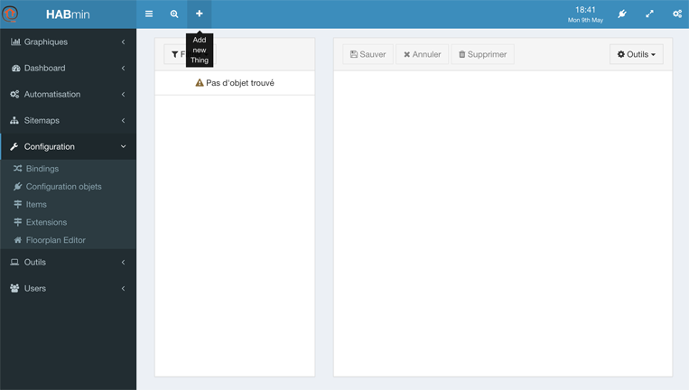
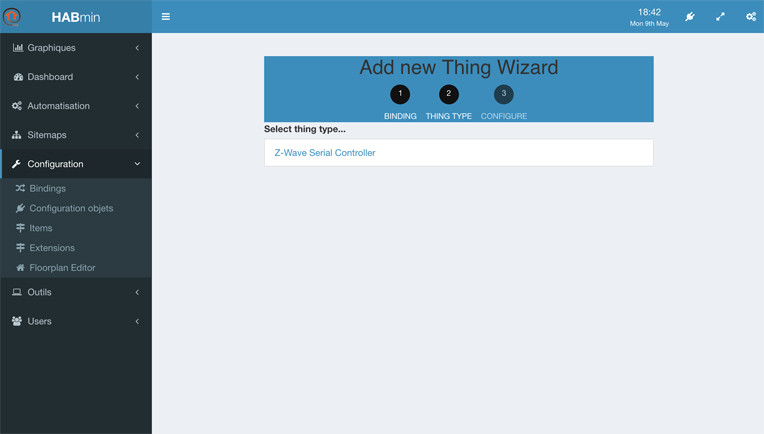
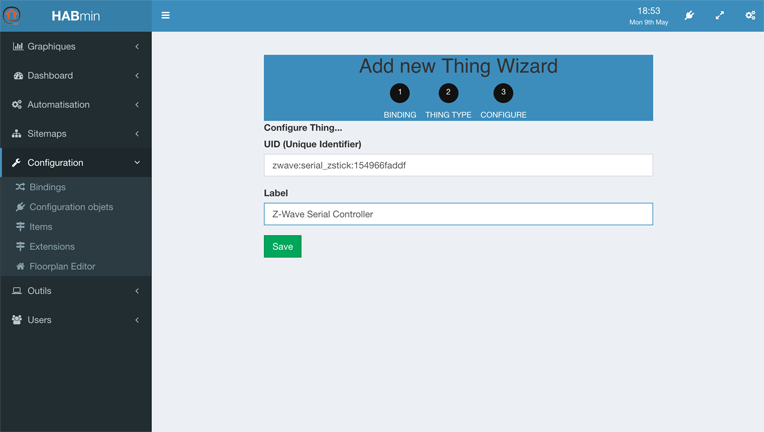
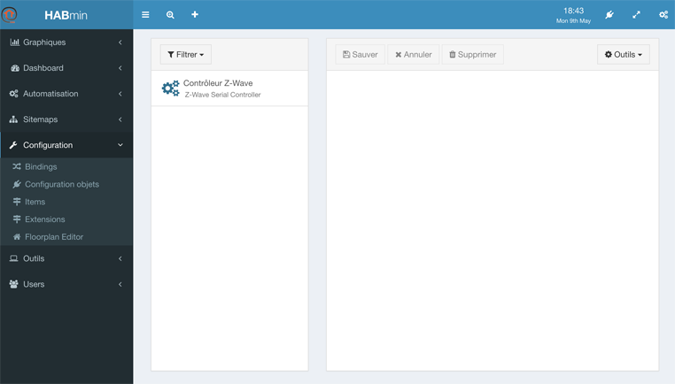
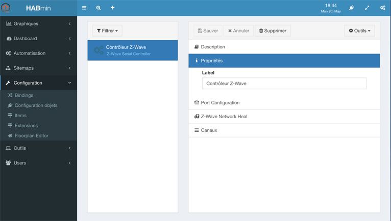
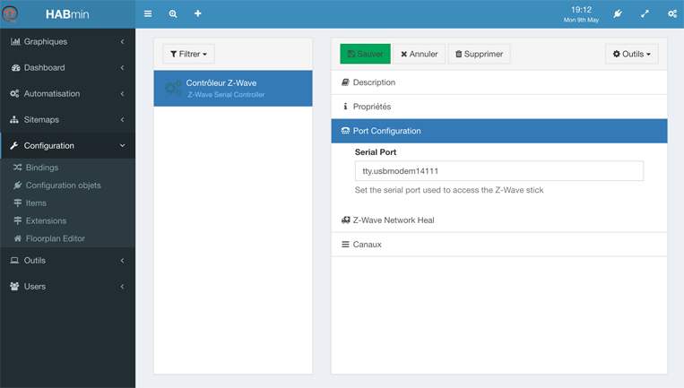
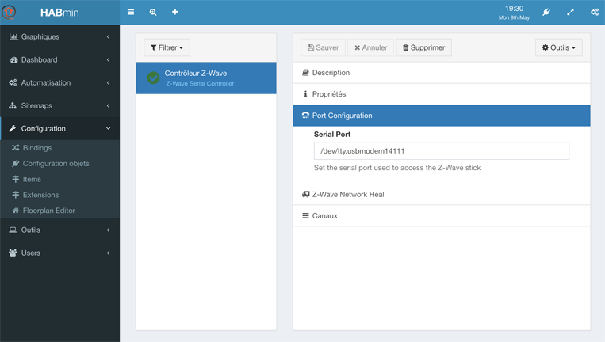

Connecting to the Z-Wave controller
What is the controller ?
The Z-wave controller is the masterpiece of the Z-Wave network.
The Z-Wave bindings relies on it to dialog with the Z-Wave devices. Adding it is made from the HABmin.
Working with the Z-Wave devices will be done in HABmin.
Adding the Thing
- From openHAB welcome screen, choose the HABmin tile.
- On the left menu, click on Configuration and Things configuration.
- The controller must be added manually. Click on the + sign, at the top of the screen.

- In the following screen, choose Z-Wave Binding :
- You can then select: Z-Wave Serial Controller :

- In the following screen, you can change the label value to the name you want to give to the controller.

- Click on save, and you are ready to configure it.
When click on Save, nothing changes on the screen, but the log file confirms that a next thing has been defined. The log file looks like:
2016-05-09 18:53:33.987 [INFO ] [smarthome.event.ThingAddedEvent ] - Thing 'zwave:serial_zstick:154966faddf' has been added.
2016-05-09 18:53:33.990 [ERROR] [ing.zwave.handler.ZWaveSerialHandler] - ZWave port is not set.
2016-05-09 18:53:33.990 [INFO ] [me.event.ThingStatusInfoChangedEvent] - 'zwave:serial_zstick:154966faddf' changed from UNINITIALIZED to INITIALIZING
Configuring it
- On the left menu, click again on Things configuration, the controller is now in the list :

- Click on the Controller
- The following screen allows you to configure the Thing.

Configuring the port
This section is so far centred on Mac OS. It must be modified in order to cover Linux and Windows. —
Finding the port name
- Open the terminal window
- Type the following command
ls \dev\tty* - Depending on your USB device, the name can look like
/dev/tty.SLAB_USBtoUARTor/dev/tty.usbmodem14111
The port name that is displayed is the parameter needed
Setting the port name
- Click on Port configuration
- Fill the serial port with the port name

- Click on save
- After a few seconds, the thing icon becomes greens

If you made any kind of mistake in the port configuration, the icon will become red. The log file will contain this kind of lines:
2016-05-09 19:14:27.162 [INFO ] [ing.zwave.handler.ZWaveSerialHandler] - Stopped ZWave serial handler 2016-05-09 19:14:27.163 [INFO ] [ing.zwave.handler.ZWaveSerialHandler] - Connecting to serial port 'usbmodem14111' 2016-05-09 19:14:27.163 [INFO ] [smarthome.event.ThingUpdatedEvent ] - Thing 'zwave:serial_zstick:154966faddf' has been updated. 2016-05-09 19:14:27.165 [INFO ] [me.event.ThingStatusInfoChangedEvent] - 'zwave:serial_zstick:154966faddf' changed from OFFLINE (COMMUNICATION_ERROR): Serial Error: Port tty.usbmodem14111 does not exist to OFFLINE 2016-05-09 19:14:27.166 [INFO ] [me.event.ThingStatusInfoChangedEvent] - 'zwave:serial_zstick:154966faddf' changed from OFFLINE to OFFLINE (COMMUNICATION_ERROR): Serial Error: Port usbmodem14111 does not exist
Looking to the logs
The console will display messages related to the binding initialisation.`
A “clean” startup looks this way in the log file:
2016-05-09 21:29:33.195 [INFO ] [arthome.ui.paper.internal.PaperUIApp] - Started Paper UI at /ui 2016-05-09 21:29:33.252 [INFO ] [.dashboard.internal.DashboardService] - Started dashboard at /start 2016-05-09 21:29:33.567 [INFO ] [ing.zwave.handler.ZWaveSerialHandler] - Serial port is initialized 2016-05-09 21:29:33.626 [INFO ] [ui.habmin.internal.servlet.HABminApp] - Started HABmin servlet at /habmin 2016-05-09 21:29:33.478 [INFO ] [me.event.ThingStatusInfoChangedEvent] - 'zwave:serial_zstick:154966faddf' changed from UNINITIALIZED to INITIALIZING 2016-05-09 21:29:33.479 [INFO ] [me.event.ThingStatusInfoChangedEvent] - 'zwave:serial_zstick:154966faddf' changed from INITIALIZING to OFFLINE 2016-05-09 21:29:33.490 [INFO ] [ing.zwave.handler.ZWaveSerialHandler] - Connecting to serial port '/dev/tty.usbmodem14111' 2016-05-09 21:29:33.682 [INFO ] [ve.internal.protocol.ZWaveController] - Starting ZWave controller 2016-05-09 21:29:33.683 [INFO ] [ve.internal.protocol.ZWaveController] - ZWave timeout is set to 5000ms. Soft reset is false. 2016-05-09 21:29:33.802 [INFO ] [basic.internal.servlet.WebAppServlet] - Started Basic UI at /basicui/app 2016-05-09 21:29:31.896 [INFO ] [smarthome.event.ThingAddedEvent ] - Thing 'zwave:serial_zstick:154966faddf' has been added. 2016-05-09 21:29:33.823 [INFO ] [assic.internal.servlet.WebAppServlet] - Started Classic UI at /classicui/app 2016-05-09 21:29:36.875 [INFO ] [age.SerialApiGetInitDataMessageClass] - NODE 1: Node found 2016-05-09 21:29:36.876 [INFO ] [age.SerialApiGetInitDataMessageClass] - ZWave Controller using Controller API 2016-05-09 21:29:36.876 [INFO ] [age.SerialApiGetInitDataMessageClass] - ZWave Controller is Primary Controller 2016-05-09 21:29:36.876 [INFO ] [age.SerialApiGetInitDataMessageClass] - ------------Number of Nodes Found Registered to ZWave Controller------------ 2016-05-09 21:29:36.876 [INFO ] [age.SerialApiGetInitDataMessageClass] - # Nodes = 1 2016-05-09 21:29:36.877 [INFO ] [age.SerialApiGetInitDataMessageClass] - ---------------------------------------------------------------------------- 2016-05-09 21:29:36.881 [INFO ] [me.event.ThingStatusInfoChangedEvent] - 'zwave:serial_zstick:154966faddf' changed from OFFLINE to ONLINE